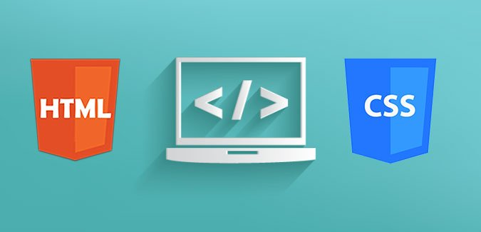
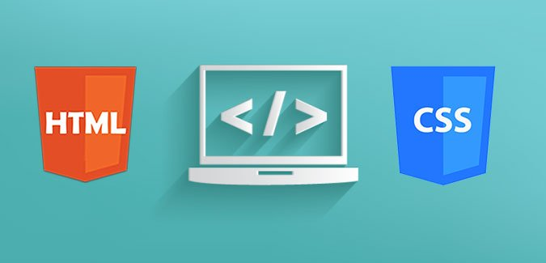

Tyrell Herbst
Welcome to my digital CV, upon interacting with the CV you will be able to know more about me, my skill set and expertise, my experience and my intersts.
Find out more about me on the following social platforms:
Expertise
WEB Development and Design
I am able to both design and develop a website.This includes planning, creating and coding web pages, using both technical and non-technical skills. I can determine not only the look of the website but the contents and how the site works as well.
Data Analytics
I am able to analyze systematic computational data or statistics. I can also discover, interpret, and communicate meaningful patterns in data, and apply data patterns towards effective decision-making.Networking
This includes building, using and maintaining computer networks - including hardware and software protocols - so that multiple computing devices can share resources. It also includes, analyzing, troubleshooting and evaluating computer network problems.More Skills and Project Work
 


Contact Me
 tyrellh589@gmail.com
+27 78 289 0745
tyrellh589@gmail.com
+27 78 289 0745
Designed By Tyrell Herbst